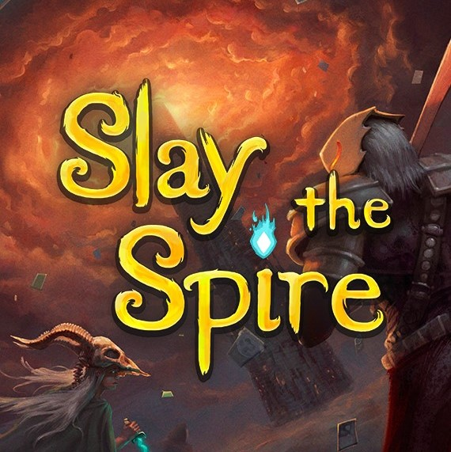

Binding of Isaac
Review >>The Binding of Isaac: Rebirth is a randomly generated game with heavy Rogue-like elements. Players will find bizarre treasures that gives Isaac super human abilities and enabling him to fight off droves of enemies, discover secrets and reach safety.
